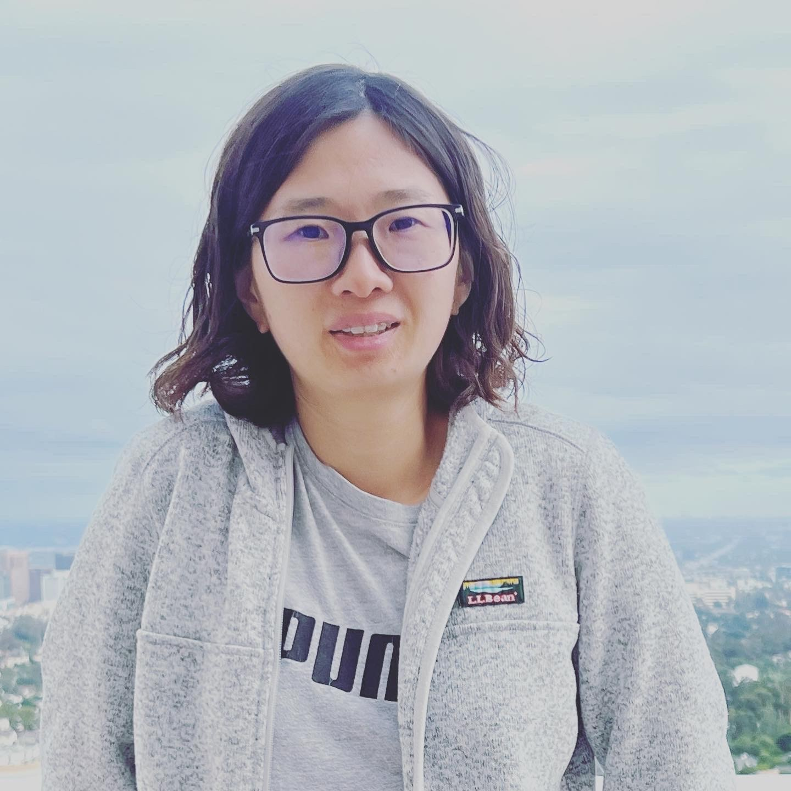

Wendy Chao

Summary
I have +10 years of working experience developing Embedded Software System for high volume projects.
Thoroughly knowledgeable in all aspects of firmware design and development. Practiced troubleshooter for most short- term and long-term issues.
Seeking to leverage my technical and professional expertise to grow in the new role of embedded software at your company.
Education
- Master of Computer Engineering - San Jose State University
Work Experiences
- Embedded Software Engineer - SnapOn
Nov 2022 - Current
- Performing software design and implementation of vehicle interface software and protocols based on ARM Cortex-M series in the automotive diagnostic scanner.
- Understanding and implements vehicle communication protocols and potential areas for process improvement.
- Collaborating with Applications engineers in the development of innovative software solutions for vehicle specific functions and issues.
- Software Engineer - Parade Tech.
July 2019 - Nov 2022
- Firmware development of Display Port TCON controller
- Secure Boot ROM verification and testing.
- Embedded software architecture definition, development and verification of Display Port controller.
- On-site support to resolve customer technical and quality issues.
Skills
Programing Language
Embedded Skill